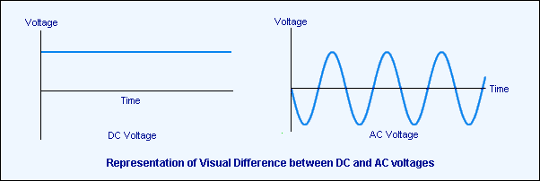
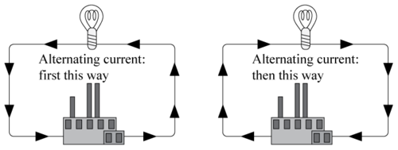

This presentation
https://tinyurl.com/dc-grids
What is Direct Current?

Alternating Current (AC)

Alternating Current (AC)
High voltage transport
Alternating Current (AC)
Induction motor
Alternating Current (AC)
Slander: Topsy's execution
AC (Alternating Current)
Historic advantages:
- Traditional (turbine) generation
- Better for motors
- Efficient power conversion/transport
Direct Current (DC)
Photovoltaics
Direct Current (DC)
Wind (requires AC-DC conversion)
Direct Current (DC)
Batteries
Direct Current (DC)
Lighting
Direct Current (DC)
Audio
DC (Direct Current)
Modern advantages:
- Sustainable storage and production
- Motor drivers convert AC/DC/AC anyways
- DC/DC power conversion more efficient
DC (Direct Current)
Increased efficiency
Typical loads: 5-15%
Stage loads: 30-40%
DC (Direct Current)
Less copper (up to 50%)
conversion hardware (about 20x volume)
DC (Direct Current)
Flexibility & simplicity
DC Microgrids
Decentralized
- Generation
- Storage
- Management
DC Micrgrids
Techincal advantages
- Plug 'n play storage, generation and cabling
- Microgeneration with increased grid stability
- Increased efficiency, reduced transport needs
- Simplified redundancy and reliability
DC Micrgrids
Social advantages
- Community-based energy self-determination
- Local self-reliance
- Grid independence
Technical challenges
- Truckloads of legacy (AC)
- Limited availability of devices
- Battle-testing system stability
Business challenges
- Unthreaded territory
- No economies of scale
- Legal incompatibilities
AC grid cost parity
Design for scaling
Find business cases with early legacy system cost parity, attempt to reach parity scale early in development by scaling quickly.
Distribute investment load
Establish solid partnerships (academic, public, private), distribute R&D and production investment load.
Roles for specialized partners:
- Power conversion
- Installation and maintenance
- End-device distribution (USB PD)
- Political/legal reform
Agile development approach
Many small iterations towards well-defined vision/goal. Adjust development based on test feedback and opportunities.
Many (small) pilots
Multiple use cases; different loads, hybrid generation and storage. Attempt cost neutrality to sustain development.
Hack away
Start using DC power now for:
- Stage lighting
- Stage audio
- LED strips
The more experience the better.
Thanks!
Any questions?
https://tinyurl.com/dc-grids
https://github.com/dokterbob/dc-grid-presentation